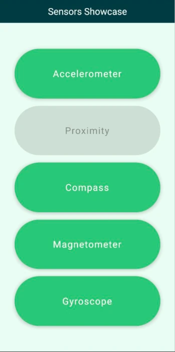
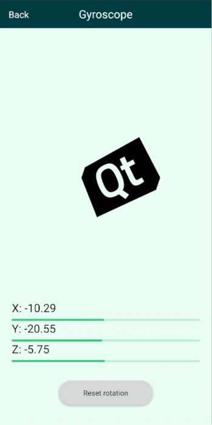

Sensors Showcase
The Sensors Showcase example demonstrates sensor usage with visual examples.

Overview
On startup, the application shows a menu with buttons for the subviews for each sensor. The sensor views instantiate the given sensor, display the sensor's values as numbers, and also visualize them with a simple graphical representation.
Main Menu
The main view shows the title with the name of the application and a button for each subview laid out evenly by a ColumnLayout. The navigation between the subviews and the main menu is managed by a StackView.
Accelerometer View
The accelerometer view shows the current device acceleration values and moves around an image with an amount that is opposite of the device acceleration giving the image an inertia effect that is proportional with the movement of the device.
Moving around the image happens in the accelerometer onReadingChanged method.
Accelerometer { id: accelerometer property real x: 0 property real y: 0 property real z: 0 active: true dataRate: 25 onReadingChanged: { x = (reading as AccelerometerReading).x y = (reading as AccelerometerReading).y z = (reading as AccelerometerReading).z imageTranslation.x = -x * 10 imageTranslation.y = y * 10 } }
Whenever there is a new accelerometer value the image translation coordinates are updated accordingly.
Proximity View
The proximity view shows an image that is enlarged whenever the proximity sensor of the device is covered.
Compass View
The compass view shows a compass image that is rotated according to the Compass sensor reading value making the compass turn towards north.
Magnetometer View
The magnetometer view displays a magnet image that is rotated around an amount that is decided by the rotation angle of the vector given by the x and y magnetometer values. This results in general in the same rotation as the compass gives, demonstrating one use case of how the magnetometer readings can be used. Since the magnetometer provides readings along all three axes, there is more freedom with how these readings can be used.
Magnetometer { id: magnetometer active: true dataRate: 25 onReadingChanged: { root.magnetometerX = (reading as MagnetometerReading).x root.magnetometerY = (reading as MagnetometerReading).y root.magnetometerZ = (reading as MagnetometerReading).z root.magnetRotation = ((Math.atan2(root.magnetometerX, root.magnetometerY) / Math.PI) * 180) } }
Gyroscope View

The gyroscope view also shows an image that is rotated around three axes with an amount that is calculated from the gyroscope readings. Since the gyroscope provides relative rotational change around the three spatial axes and the time between reading updates can vary, the time of the readings are stored and the rotational change is normalized based on the time passed between reading updates.
Gyroscope { id: gyroscope property var lastTimeStamp: 0 property real x: 0 property real y: 0 property real z: 0 active: true dataRate: 25 onReadingChanged: { x = (reading as GyroscopeReading).x y = (reading as GyroscopeReading).y z = (reading as GyroscopeReading).z let firstCall = false if (lastTimeStamp == 0) { firstCall = true } let timeSinceLast = reading.timestamp - lastTimeStamp lastTimeStamp = reading.timestamp //Skipping the initial time jump from 0 if (firstCall === true) return let normalizedX = x * (timeSinceLast / 1000000) imageXRotation.angle += normalizedX let normalizedY = y * (timeSinceLast / 1000000) imageYRotation.angle -= normalizedY let normalizedZ = z * (timeSinceLast / 1000000) imageZRotation.angle += normalizedZ } }
By pressing the reset button the image rotation is reset to 0.